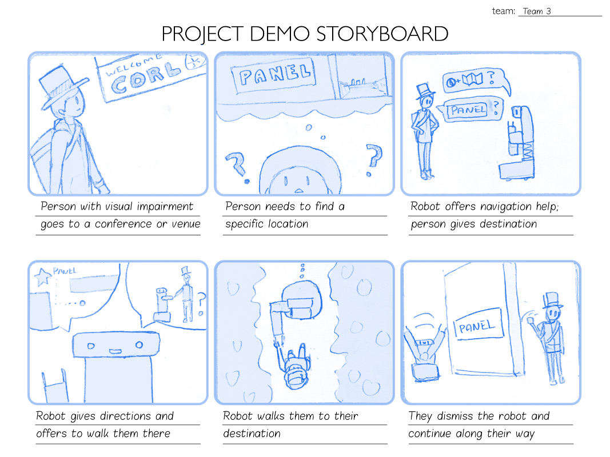

Sketch:
Storyboard:
Environmental Modifications
Our bot does not require substantial environmental modifications. However, it has the following environmental requirements:
- An indoor environment with smooth, robot-navigable flooring
- A pre-computed, labeled floor plan that can be cross-referenced for localization and path planning
Technical Capabilities
To be feasible, our bot will require the following capabilities to be implemented:
- Path finding (using building plans and room locations)
- Localization
- Obstacle avoidance (recognizing people and objects along the way and changing path to avoid them)
- Voice interface (to process vocal commands from the user)
- Hand interface (to communicate with the user and lead them to their destination)
- (Optional): Face recognition (To match users with photos of people participating to the conference?)
Company Name and Logo
We went through several iterations on the logo (and may do more in the future!).
Our company name is A•Robotics (Long-form: Accessibility Robotics), representing our focus on improving accessibility through the use of robotics technology.